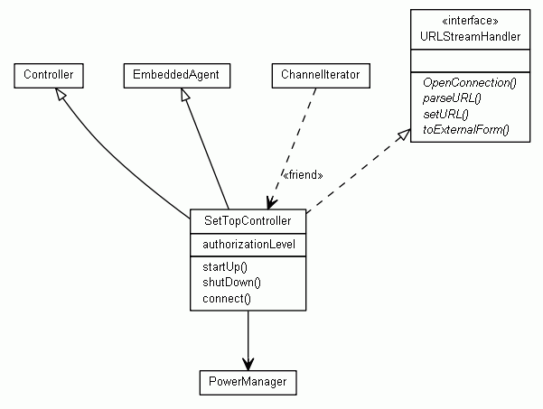

Last change: Tuesday, October 28, 2014 4:26 pm
Last change: Tuesday, October 28, 2014 4:26 pm
Unless otherwise expressly stated, all original material on this page created by Diomidis Spinellis is licensed under a Creative Commons Attribution-Share Alike 3.0 Greece License.
|
/*
* Advanced relationships * UML User Guide p. 137 */ /** * @opt attributes * @opt operations * @hidden */ class UMLOptions {} class Controller {} class EmbeddedAgent {} class PowerManager {} /** * @extends Controller * @extends EmbeddedAgent * @navassoc - - - PowerManager */ class SetTopController implements URLStreamHandler { int authorizationLevel; void startUp() {} void shutDown() {} void connect() {} } /** @depend - <friend> - SetTopController */ class ChannelIterator {} interface URLStreamHandler { void OpenConnection(); void parseURL(); void setURL(); void toExternalForm(); } |  |
Last change: Tuesday, October 28, 2014 4:26 pm
Unless otherwise expressly stated, all original material on this page
created by Diomidis Spinellis is licensed under a
Creative Commons Attribution-Share Alike 3.0 Greece License.